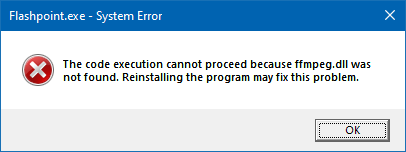
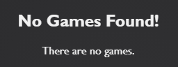

The extraction window displays errors while extracting Flashpoint
Make sure you aren't extracting Flashpoint to the Temp or Program Files folders. If you are still getting errors regardless, the file may not have been downloaded properly and should be redownloaded.
The Flashpoint window isn't appearing when I run it
First, look inside your Flashpoint folder and check the size of the preferences.json file.
If preferences.json has a size of 0 KB:
- Delete preferences.json.
- Download a new copy of preferences.json from here and insert it into your Flashpoint folder.
- Right-click on the taskbar and select Task Manager.
- In the opened Task Manager window, go to the Details tab.
- Scroll down until you see one or more instances of Flashpoint.exe.
- Select them and then click the End Task button until all Flashpoint.exe instances are gone.
I get an error saying that ffmpeg.dll was not found

If you have the Avira antivirus installed, add an exception for your Flashpoint folder and then re-extract Flashpoint to it (if 7-Zip asks you if you want to replace a file, click No to All).
Otherwise, check the location of the Flashpoint folder by looking at the folder path above the file view in File Explorer.
If the folder path includes AppData > Local > Temp:
- Delete your Flashpoint folder.
- Re-extract Flashpoint, this time to a location such as your Downloads folder or your desktop. The extractor is probably located in the Temp folder as well, but if you cannot find it, redownload it.
The launcher has no games or animations

Click the Config button at the top of the launcher and look at the Flashpoint path input box in the Flashpoint section.
If the input box is red:
- Click the Browse button.
- Find your Flashpoint folder in the File Explorer window that appears, then select it and click Select Folder. The Flashpoint path should turn green.
- Scroll to the bottom of the configuration screen and click the Save and Restart button.
- Close Flashpoint.
- Download flashpoint.sqlite from here.
- Inside Flashpoint's Data folder, replace your old copy of flashpoint.sqlite with the one you just downloaded.
Launching a game or animation results in a blank window
First, make sure that the prerequisites listed on the download page are installed.
If they are installed and entries are still opening a blank window, it is likely the result of antivirus interference. Follow this guide to add an antivirus exception for Flashpoint. Make sure to re-extract Flashpoint afterwards in order to restore any deleted files.
Still having issues?
You may find more detailed troubleshooting info at the Extended FAQ page. Otherwise, join the Flashpoint Discord server and explain your problem in the #flashpoint-help channel.